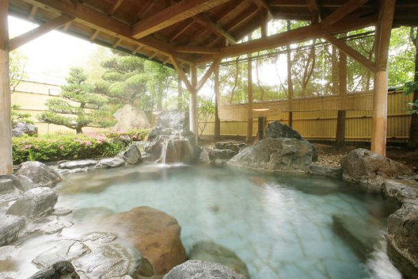
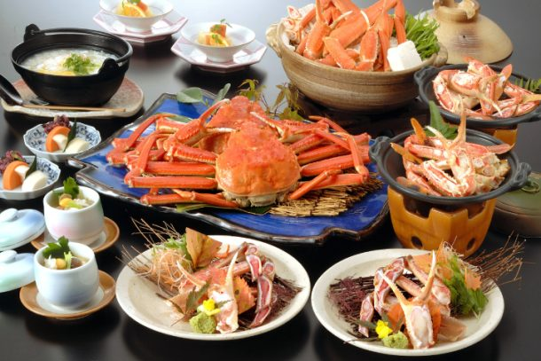
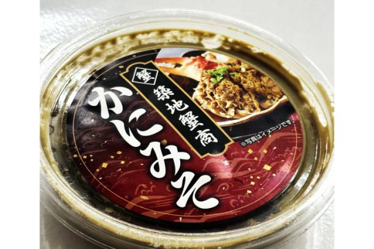

最新の情報は 公式サイトのツアーページ をご覧ください。
【冬のごちそう】本ズワイガニ2枚半を味わう♪夕日ヶ浦温泉「海花亭」カニ尽くしの日帰り旅
| 平日 | 24,800円／人 |
| 土日祝 | 25,800円／人 |
※税込／大人・子ども同額
🚕 貸切プランもご用意しています！
ご家族やご友人同士で、気兼ねなく冬のカニ旅を楽しみたい方におすすめ♪
| 5名様～9名様／1台 | 25,800円／人 |
| 5名様～9名様／1台 （土日祝） | 26,800円／人 |
※税込／大人・子ども同額
※貸切車両は5名様以上からの手配となります。
※貸切プランは別途手配となるため、通常の乗合プランとはお申込み方法が異なります。
※2026年12月22日～2027年2月28日まで
| 現在のお申込み状況(最少催行人数6名) |
※1名様からご予約いただけますが6名様以上で運行します。
※最新のお申込み状況はお問い合わせください
和久傳の森＆蟹を楽しめるバスツアーもございます！詳細はこちらをご確認ください▼
夕日ヶ浦温泉「海花亭」で味わう絶品かにフルコースと湯ったり温泉満喫旅
冬のごちそうを楽しみに、ちょっと贅沢な日帰り旅へ。
寒い季節だからこそ食べたくなる、冬の味覚「カニ」。
今回は、夕日ヶ浦温泉「海花亭」へ足を延ばし、本ズワイガニ2枚半を使用したカニ尽くしのお料理を、ゆっくりと味わいます。
カニ刺し、焼きガニ、カニスキ鍋、約600gのゆでガニ。
さらに、海花亭25周年企画の本ズワイガニ特製カニミソのプレゼント付き♪
そして、海花亭での滞在時間はたっぷり約2時間。
お食事を楽しんだあとは、自家源泉100％の掛け流し温泉「美人の湯」で、ほっこり温まるひとときを。
体の芯から温まる温泉に浸かりながら、日頃の疲れをゆっくり癒してみませんか？
カニを味わって、温泉でほっこり。
食後は「かに一番」で丹後のお土産を選び、帰りには「道の駅 京丹波 味夢の里」にも立ち寄ります。
京都駅からタクシーでゆったり向かう、冬のご褒美旅。
美味しいものを食べて、温泉に浸かって、ちょっと遠くまで。
今年の冬は、気の合うお友達と、またはおひとり様で。
大人のための「カニ＋温泉」旅を楽しみませんか？
| 🌟おすすめポイント |
| 🦀本ズワイガニ2枚半！冬の味覚をたっぷり堪能 カニ刺し・焼きガニ・カニスキ鍋・約600gのゆでガニまで！ いろいろな食べ方で、本ズワイガニを心ゆくまで味わいます。 |
| 🦀海花亭昼食カニプラン25周年の特別な味わい 本ズワイガニ特製カニミソ1個付き。 カニ好きにはたまらない、冬ならではの味覚をご用意しました。 |
| ♨食後は「美人の湯」でほっこり 海花亭での滞在はたっぷり約2時間。 お食事のあとは、自家源泉100％の掛け流し温泉「美人の湯」へ。 冬の冷えた体を温めながら、日頃のお疲れを癒すひとときをお楽しみください。 ※フェイスタオル、レンタルバスタオル付 |
| 🚙京都駅からラクラク日帰り 京丹後までの移動はタクシーにおまかせ。 長距離運転の心配もなく、車内でゆったり過ごしながら冬の味覚を目指します。 |
| 🛍丹後のお土産もしっかり楽しむ お食事＆温泉のあとは「かに一番」へ。 丹後の海産物などのお買い物を楽しみ、帰りには「道の駅 京丹波 味夢の里」にも立ち寄ります。 |
行程
| 日時 | 場所 |
| 9:00 | 京都駅八条口ＭＫタクシーのりば（集合・出発） |
| 11:30 | 夕日が浦温泉 海花亭 ★たっぷり満足プラン 本ズワイガニ 2枚半使用 ＜ご昼食／約120分＞ |
| 13:40 | かに一番 木津店 ＜お買い物／約30分＞ |
| 15:30 | 道の駅 京丹波 味夢の里 ＜休憩／約20分＞ |
| 17:00 | 京都駅（解散） |
※渋滞等で予定通りの滞在時間をお取りすることができない場合がございます。予めご了承ください。
夕日が浦温泉 海花亭

美人の湯
お品書き（たっぷり満足プラン）

本ズワイガニ 2枚半使用
| ・カニスキ鍋（生ガニ半身） ・焼きガニ（生ガニ半身） ・カニ刺し（生ガニ半身） ・茹でガニ（約600ｇ姿1枚付き） | ・茶碗蒸し ・雑炊 ・漬物 ・デザート |
プレゼント

海花亭25周年企画の本ズワイガニ特製カニミソ
【MKトラベルLINE公式アカウント】
MKトラベルの新規ツアー情報をLINEでお届けいたします

【各SNSでも京都の情報やツアー情報をお届けしています】


旅行条件
| ツアー番号 | T356MK |
| 出発地 | 京都市 |
| 添乗員／ガイド | なし（乗務員がその業務を代行いたします）／なし |
| 食事 | なし |
| 最少催行人数 | 6名 |
お申込みについてのご注意
※最少催行人数は6名様です。最少催行人員に満たない場合は、旅行の実施を取りやめることがあります。出発の３日前にその旨をご連絡し、お客様から当社がお預かりしている旅行費用の全額をお返しいたします。
※旅行条件・旅行代金は、2026年10月11日現在を基準としています。
※行程および帰着時間は交通事情などにより変更になる場合があります。
※お申込みの前に弊社の募集型企画旅行規約をご確認ください。
よくある質問
Q.1名ですが、申し込みできますか？
A.はい。お一人参加の方もたくさんいらっしゃいますので、お気軽にお申し込みください。
Q.参加したかったけど、日程が合いません／終了していました
A.貸切で再現できる場合もございますのでご相談ください。お問合せフォームはこちら
＜お問合せフォームはこちら▶＞
＜MKトラベルTOPはこちら▶＞
＜おすすめツアー一覧はこちら▶＞
【WEBシステムよりご予約の場合】
・TACPOカード
・コンビニ決済
・クレジットカード決済
お支払方法詳細はこちら
お客様のご都合でご予約をキャンセルされる場合は、すみやかに下記お問合せ先までご連絡ください。
◆コンビニ決済をご選択の場合、支払期限を過ぎますとご予約は自動的にキャンセルとなりますのでご注意ください。
◆お客様のご都合でご予約をキャンセルされた場合、下記キャンセル料を申し受けます。お支払いいただきました旅行代金よりキャンセル料を相殺して、お客様へご返金させていただきます。
【店頭決済／銀行振込／コンビニ決済の場合】
お客様のご指定の口座へご返金させていただきます。
【クレジットカード決済の場合】
ご利用のクレジットカード会社を経由して、ご返金させていただきます。締め日のタイミングによっては一度請求が発生し、その後返金処理となります。キャンセル料
11日目に当たる日以前
無料
10日目に当たる日以前
20%
7日目に当たる日以前
30%
旅行開始日の前日
40%
旅行開始日の当日
50%
旅行開始後又は無連絡
100%